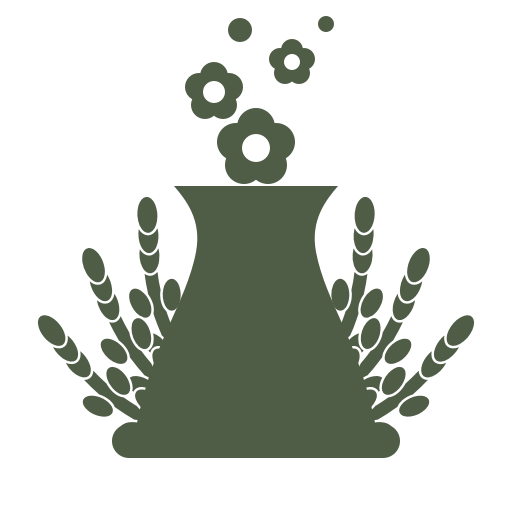

Logo · two
A cooling tower, flowering.
The structure people were taught to fear, producing life instead of steam. The mark states the argument before a word is read.
Why the wheat matters structurally, not decoratively. Four earlier concepts failed
because a vertically symmetric form sitting on a widened base reads as a chess piece.
The wreath reaches sideways and breaks that silhouette. Remove it and the mark becomes a
rook again.
Structure
| Part | Role |
|---|---|
| Tower | The hyperboloid. The recognisable nuclear signifier, and the only part that must survive at every size. |
| Blossom | Three flowers and two buds where the plume would be. Life instead of steam. |
| Wreath | Six wheat arms, three each side, mirrored. Breaks the vertical silhouette. |
| Base | The plinth. Grounds the tower; excluded from the X measurement. |
The lockup is never altered. Parts are not separated, rearranged, rescaled relative to each other, or used individually. The only sanctioned variant is the reduced mark below.
Clear space
X = tower height
Minimum clear space on all four sides is 0.5 X, where X is the height of the tower measured from the top of its rim to the underside of the base.
Why relative, not fixed. Clear space in millimetres breaks at the next size. Derived
from the mark itself, it holds from a business card to a festival banner without anyone
recalculating.
Minimum size
| Digital | ||
|---|---|---|
| Full mark | 18 mm wide | 96 px |
| Reduced mark | 8 mm wide | 16 px |
Below roughly 32px, switch to the reduced mark (
noyau-mark-small.svg).
The wheat and the two smaller blossoms are dropped; the tower and one flower carry it.
The last two squares above are the evidence. Both are real rasterised 16px PNGs, not
scaled vectors. A browser scales an SVG far more kindly than a favicon renderer does —
which is exactly how a mark that dies in the wild passes review.
Colourways, ranked
Ranked so an unanticipated background still has an answer: take the highest-ranked colourway that clears contrast against it.

One value recolours the whole mark. The SVG inherits a single
color
attribute. A colourway is a one-value change, never a redraw — and every separation in the
mark is real negative space, computed by boolean subtraction, so the background shows
through the gaps. That is what makes reversed, one-colour print, foil, engraving and
embroidery all work from the same file.
Positioning
Top-left, or optically centred. The mark reads as a signature at top-left and as a statement centred. Both are correct.
Not bottom-right on a layout that ends there. The eye leaves the page at that corner and the mark reads as a footnote rather than as authorship.
Co-branding
Noyau will appear beside hospital, partner and funder marks. Two cases, two rules.
| Case | Rule |
|---|---|
| Partners — hospitals, associations we work alongside | Noyau sits left, partner marks at equal optical height, separated by a 1 X vertical rule. Equal standing, because the relationship is equal. |
| Funders and sponsors | Noyau sits left and 20% larger. Sponsor marks align to Noyau's optical baseline. Multiple sponsors align left-to-right in order of contribution, all at the same size as each other. |
Never lock another organisation's mark into the Noyau clear space. The 0.5 X zone is inviolable — a partner mark inside it reads as a sub-brand.
Registered mark
No ® or ™ may be used yet. The name has been searched, not cleared. A trademark
attorney must confirm before any symbol is applied, registered or printed. Using ® without
registration is a misrepresentation in most jurisdictions.